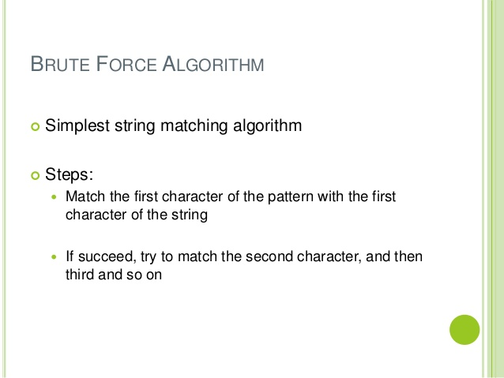

Brute-ForcePattern Matching Algorithm
The brute force algorithm consists in checking, at all positions in the text between 0 and n-m, whether an occurrence of the pattern starts there or not. Then, after each attempt, it shifts the pattern by exactly one position to the right. The brute force algorithm requires no preprocessing phase, and a constant extra space in addition to the pattern and the text. During the searching phase the text character comparisons can be done in any order. The time complexity of this searching phase is O(mn) (when searching for am-1b in an for instance). The expected number of text character comparisons is 2n.
An obvious method for searching and matching substrings is to check every possible position of the pattern within the text. This means checking each position in the text at which the pattern might match. However, it is not necessary that a position is matchable, so the algorithm returns one of the two possible logical values: true or false. If there is a matching at a position, it returns true; otherwise, it returns false.
The naive algorithm for string matching accepts a pattern P and a text T as two arguments. The pseudocode for the naive string matching algorithm is presented below.
Pseudocode :
THE NAIVE STRING-MATCHING ALGORITHM (P,T) m = length(P) n = length(T) for s = 0 to n-m if P[1...,m] = T[s+1,...,s+m] then print "The pattern occurs with shift" s
The variable m is the length of the pattern P and the variable n is the length of the text T.
The naive algorithm only uses one loop that checks the condition P[1, ..., M] = T[s + 1, .., s + M] for each of the possible values of the shift s which shows from which position the pattern matches the text.
The algorithm can also be graphically described as sliding the pattern over the text. Using this, it can easily be seen at which shifts the pattern matches the corresponding characters in the text. This is depicted in Figure 1, where the body of the for loop considers each possible shift explicitly. The "if condition" checks whether the current shift is valid or not, and performs an implicit loop (which checks the characters of the pattern until either all positions match or there is a mismatch).
Each valid shift is printed out by the last line (so there is an option to print more than one valid shift). In the example presented in Figure 1, the pattern is P = aab and the text is T = acaabc. The pattern is in each picture shifted by one character to the right. Vertical lines in each picture connect the corresponding characters that have been found to match. In contrast, jagged lines connect the first mismatched character found, if any.
Figure 1: Graphical presentation for the naive string matching algorithm
A simpler example using words from everyday life is given in Figure 2, where green color is used for matching characters and red for the mismatching ones. This example has only one occurrence of the pattern simple in the text This is a simple example.

Figure 2: A simple example for only one occurrence of the pattern found
String matching algorithms are intended to find all occurrences of a pattern. This is depicted in Figure 3, where the pattern AABA is found three times in the given text. The worst case input is when both, the pattern and the text have the same form (for example, P = a m and T = a n ), because it is necessary to check m characters n - m + 1-times. This leads to the worst case running time O((n-m+1)m), and this upper bound is tight. Fortunately, such scenarios hardly ever occurs. Most of the strings find a mismatch at the first character of the pattern. That is why, in practice, the average running time
Figure 3: An example where more than one occurrence of the pattern is found
is more appropriate for estimating the running time. The naive algorithm does not need preprocessing because due to its simplicity there is nothing to be prepared before the algorithm starts. The naive algorithm is not optimal; indeed, so it has disadvantages, such as ignoring the information gained about the text for one value of the shift s on considering other values of s.
In Java, the function charAt is used to point at a specific character or position. Using this function, a comparison between the current characters of the pattern and the text is performed. If there is a mismatch, the pattern is shifted to the next character; otherwise, it returns the suitable shift of the pattern matching.
Algorithm :
Algorithm BruteForceStringMatch(T[0...n-1], P[0...m-1]) for i <- 0 to n-m do j <- 0 while j < m and P[j] = T[i+j] do j++ if j = m then return i return -1
Features :
- No preprocessing phase
- Constant extra space
- Always shifts the window by exactly 1 position to the right
- Comparisons can be done in any order
- Searching phase in O(mn) time complexity
- 2n expected text characters comparisons
Complexity :
The brute force algorithm consists in checking, at all positions in the text between 0 and n-m, whether an occurrence of the pattern starts there or not. Then, after each attempt, it shifts the pattern by exactly one position to the right. The brute force algorithm requires no preprocessing phase, and a constant extra space in addition to the pattern and the text. During the searching phase the text character comparisons can be done in any order. The time complexity of this searching phase is O(mn) (when searching for am-1b in an for instance). The expected number of text character comparisons is 2n.